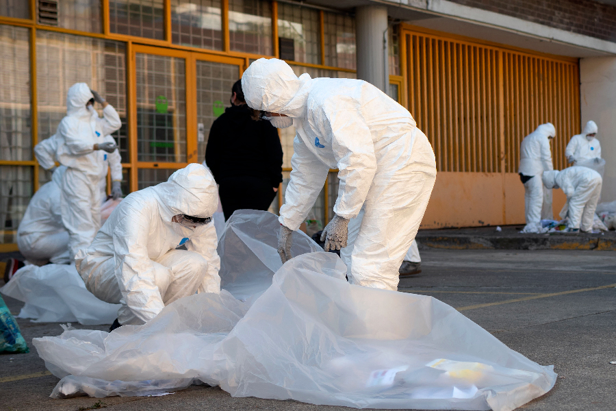

ASURA
El sábado 28 de enero inició el Proyecto Asura (Cero basura) Con la recolección de desperdicios y el pintado de la artesa ubicada junto al Edificio C de la Facultad de Química, donde se realizó la separación de basura como un ejercicio para demostrar todo lo que se puede aprovechar de ella. El objetivo de este proyecto es que en los salones se recojan los desechos antes de salir de ellos, haciendo de esto una práctica cotidiana, y que la comunidad, conformada por alumnos, docentes y trabajadores de la Facultad de Química, tomen consciencia acerca de la importancia de mantener los espacios limpios.
